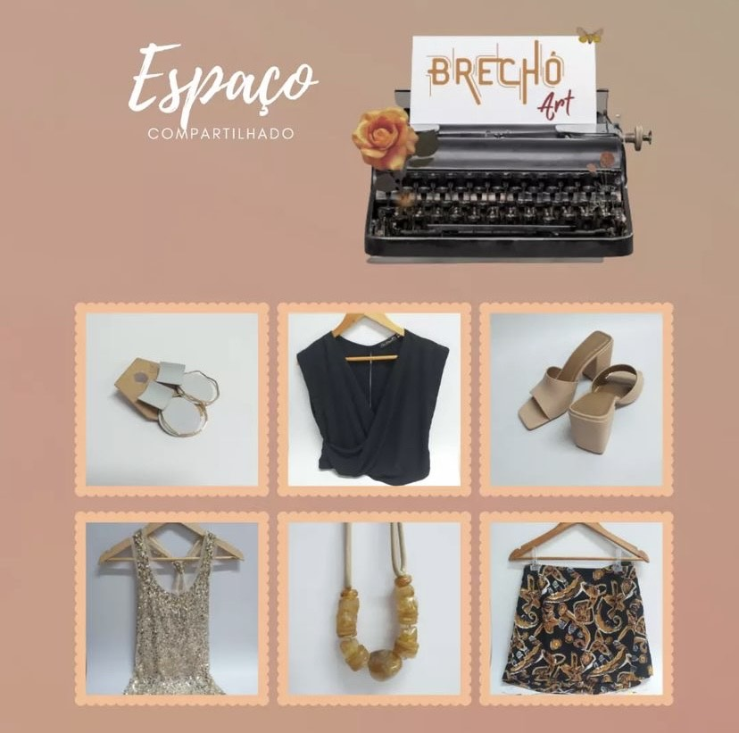

Você já comprou em brechós? Com o crescimento e a popularização do consumo sustentável a
procura por peças de segunda mão tem subido bastante, principalmente entre os millenials
e a Geração Z.
Seja pela busca de peças vintage e exclusivas, ou pela necessidade de adquirir peças por
um valor mais em conta, os brechós estão fazendo sucesso. De acordo com um relatório da
ThredUp, empresa americana especializada na venda de usados, as vendas de roupas
de segunda mão pelo globo cresceram 25 vezes mais rápido do que o setor varejista como
um todo.
Veja a seguir alguns dos melhores brechós:
Top 10 melhores brechós de BH
Brilhantina Brechó
O Brilhantina talvez seja um dos brechós mais conhecidos da cidade.
Localizado na Savassi, ele conta com um estilo bem retrô e possui um acervo dos anos 20
aos anos 80.
Localização: R. Tomé de Souza, 821 – Loja 3 – Savassi, Belo Horizonte.
Contato: 3132615181.
Ver detalhes
Boutique Brechó
Moda sustentável. Compra, troca e venda de roupas.
As peças são modernas e incluem marcas bastante conhecidas com grande variedade de peças
femininas, com cores, tamanhos e estampas para todos os gostos.
A disponibilidade das peças pode ser verificada via Instagram ou Whatsapp.
Divide espaço com o Brechó Joaninha, que vende roupas e acessórios para bebês.
Localização: Rua Leonil Prata, 537 - Alípio de Melo-Pampulha.
Contato: 31983040020.
Ver detalhes
Retrô Brechó
O Retrô Brechó é um dos mais tradicionais de Belo Horizonte e trabalha com grifes
nacionais importadas. Os preços são
variados e a loja trabalha por meio de consignação, com pagamento feito na hora.
Localização: R. Raul Pompéia, 46 - São Pedro.
Contato: 31998850769.
Ver detalhes
Dorotea Brechó
O Dorotea Brechó é conhecido por sua curadoria impecável,
feita pela proprietária Amanda Mendes, que é designer de moda.
Localização: Rua dos Aimorés, 444 – 2° Piso – Funcionários.
Contato: 31997880603.
Ver detalhes
Camaleoa Brechó

O Camaleoa Brechó foi criado por uma advogada e um arquiteto e é bastante focado nas
roupas dos anos 90.
Além disso, eles também restauram e customizam roupas.
Localização: Rua Ipiranga, 127, Floresta.
Contato: 31984319877.
Ver detalhes
Voilà
O brechó trabalha exclusivamente com roupas e acessórios femininos de grifes nacionais e
importadas. Para quem quer vender algum item, as peças são avaliadas apenas com hora
marcada.
Estilo: consignado – pagamento em dinheiro ou cheque
Prazo de troca: até cinco dias úteis.
Localização: R. Grão Mogol, 333 – Loja 43, Carmo.
Contato: 3125161972.
Ver detalhes
Box Brechó BH
Brechó online com vendas pelo site e Instagram.
O objetivo do brechó é compartilhar guarda-roupas, fazer a moda ser acessível e
sustentável para o máximo de pessoas possível.
Não são feitas trocas.
Envio para todo o Brasil por motoboy (BH, Contagem, Betim, Vespasiano, Ribeirão das
Neves e Lagoa Santa) ou pelos Correios.
Também compram peças femininas, sapatos, bolsas e peças infantis de segunda mão em ótimo
estado.
Localização: R. Atenas, 176 - Prado.
Contato: 3125161972.
Ver detalhes
Brechó Art

Casacos, bolsas, calças, acessórios, sapatos e muito mais ficam à disposição e com
preços acessíveis.
Atendimento no espaço físico com horário agendado.
Compartilha o espaço com o Brechó Art.
Localização: Rua Gramado, 50 - Bairro Glória.
Contato: 31993626796.
Ver detalhes
Consensual Brechó
Para quem está de olho em roupas modernas, o brechó Garimpo Fashion é uma ótima opção.
A loja vende roupas, sapatos e acessórios a partir de R$ 10.
Localização: R. Rio de Janeiro, 1278 - Lourdes.
Contato: 31993485551.
Ver detalhes
Brecho Sinha
O brechó preza pela moda sustentável e preços baixos. A loja conta com um estilo vintage
e clássico e quem está interessado em vender produtos,
deve levar o mínimo de 20 peças para a avaliação da proprietária.
Localização:Galeria Plaza - Av. do Contorno, 6777 - Lourdes.
Contato: 31999728910.
Ver detalhes